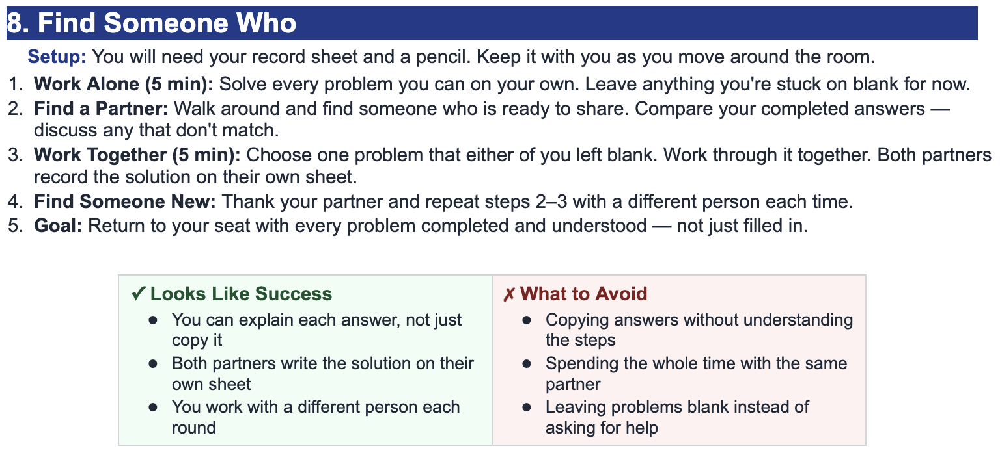
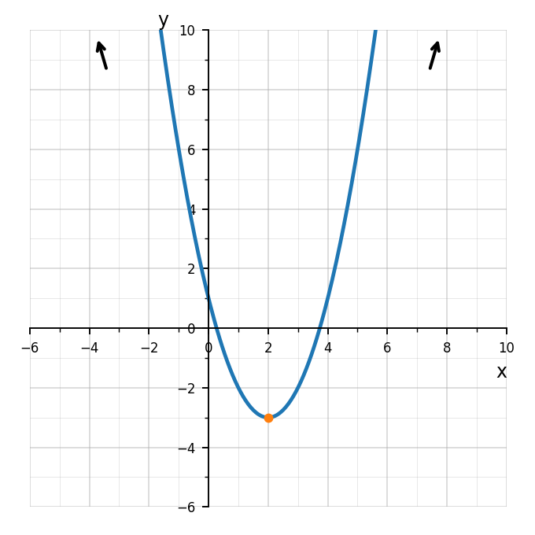
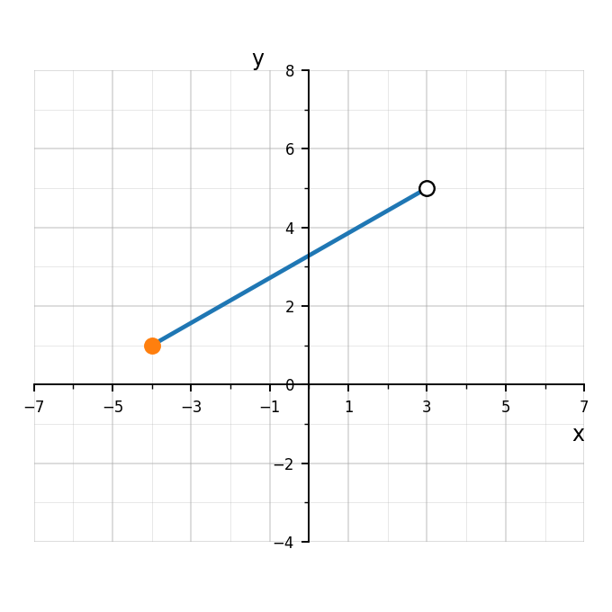

Use the graph to determine the range of the function. Write your answer in interval notation.

Use the graph to determine the domain of the function. Write your answer in interval notation.

Determine the domain of $g(x)=\sqrt{x-5}$.
The table gives values of a function. Determine the domain and range of the relation.
For each quadratic equation, identify $a$, $b$, and $c$.
$x^2+5x+6=0$
$2x^2-7x+3=0$
$-3x^2+4x-9=0$
$x^2-16=0$
Calculate the discriminant $\Delta=b^2-4ac$ for each equation.
$x^2-6x+8=0$
$x^2+4x+4=0$
$x^2+2x+5=0$
For each value of $\Delta$, state the number of real solutions.
$\Delta=25$
$\Delta=0$
$\Delta=-12$
$\Delta=3$
Match each equation to the description of its graph.
$y=x^2-4x+4$
$y=x^2-4x+1$
$y=x^2-4x+9$
Descriptions:
crosses the $x$-axis twice
touches the $x$-axis once
does not touch the $x$-axis
Solve using the quadratic formula.
$$x^2-7x+10=0$$
Then explain why the result matches what factoring would give.
For each equation:
calculate $\Delta$
predict the number of real solutions
solve if real solutions exist
$x^2-12x+36=0$
$x^2-12x+20=0$
$x^2-12x+40=0$
A quadratic function has no $x$-intercepts. What must be true about its discriminant?
Explain how this connects the equation, graph, and solutions.
A quadratic equation has discriminant $\Delta=0$.
Explain what this means algebraically.
Explain what this means graphically.
Create one quadratic equation with this property.
Solve your equation using two different methods.
Explain why both methods agree.
Evaluate each expression without a calculator.
$\sqrt{49}$
$\sqrt{121}$
$\sqrt[3]{64}$
$\sqrt[4]{81}$
Simplify each square root.
$\sqrt{12}$
$\sqrt{20}$
$\sqrt{27}$
$\sqrt{75}$
Which expression is equivalent to $\sqrt{48}$?
$4\sqrt{3}$
$3\sqrt{4}$
$2\sqrt{12}$
$\sqrt{16}\sqrt{3}$
Explain how you know.
Simplify each radical expression.
$\sqrt{18}$
$\sqrt{32}$
$\sqrt{98}$
$\sqrt{147}$
For each quadratic equation, identify $a$, $b$, and $c$.
$x^2+5x+6=0$
$2x^2-7x+3=0$
$-3x^2+4x-9=0$
$x^2-16=0$
Calculate the discriminant $\Delta=b^2-4ac$ for each equation.
$x^2-6x+8=0$
$x^2+4x+4=0$
$x^2+2x+5=0$
For each value of $\Delta$, state the number of real solutions.
$\Delta=25$
$\Delta=0$
$\Delta=-12$
$\Delta=3$
Solve using the quadratic formula.
$$x^2-7x+10=0$$
Then explain why the result matches what factoring would give.
For each equation:
calculate $\Delta$
predict the number of real solutions
solve if real solutions exist
$x^2-12x+36=0$
$x^2-12x+20=0$
$x^2-12x+40=0$
A student calculates the discriminant for:
$$2x^2-3x+8=0$$
as:
$$\Delta=(-3)^2-4(2)(8)=9-64=-55$$
“Since the discriminant is negative, there are no solutions.”
What should the student have said instead? Explain carefully.
A quadratic function has no $x$-intercepts. What must be true about its discriminant?
Explain how this connects the equation, graph, and solutions.
A ball is thrown upward from a platform. Its height is modeled by:
$$h(t)=-16t^2+48t+64$$
where $h(t)$ is height in feet and $t$ is time in seconds.
Rewrite the function in vertex form by completing the square.
Identify and interpret the vertex.
Use the quadratic formula to determine when the ball hits the ground.
Explain why one solution may not make sense in context.
State a reasonable domain for the model.